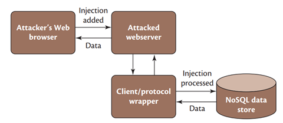
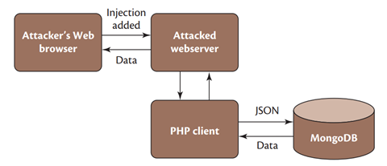

NoSQL-Injections
Bei Injektionsangriffen fügt ein Angreifer bösartigen Code in die Anweisungen ein, die von der Anwendung an die Datenbankschicht weitergegeben werden. Dies kann beispielsweise über Suchfelder, Formularfelder oder API-Eingaben erfolgen. Wenn die Anwendung solche Eingaben nicht bereinigt, kommt es zur Akzeptanz und Ausführung des Codes. Der Angreifer hat dann fast unbegrenzte Kontrolle über die zu Grunde liegende Datenbank: Er kann Daten verändern, einfügen oder löschen und hat Zugriff auf nichtautorisierte Daten [2]. Je nach Datenbank wird hierbei zwischen SQL- und NoSQL-Injectionangriffen unterschieden. Die NoSQL-Injection ist ein spezifischer Typ von Injektionsangriff, der auf NoSQL-Datenbanken ausgeführt werden kann.
Zum besseren Verständnis der NoSQL-Angriffsarten zeigt Abbildung 3 die typische die typische Architektur einer Webanwendung mit NoSQL-Datenbank. Eine solche NoSQL-Datenbank könnte beispielweise mit MongoDB realisiert werden. MongoDB ist das am weitesten verbreitete NoSQL-Datenbankmanagementsystem (Stand: Oktober 2019) und wird von Großunternehmen wie eBay, Foursquare und LinkedIn angewendet. Die NoSQL-Datenbanken sind in MongoDB dokumentenorientiert. Dabei werden JSON-ähnliche Dokumente verwendet [11]. JSON steht für JavaScript Object Notation und ist ein leichtgewichtiges Datenformat, das für den Datenaustausch zwischen Anwendungen verwendet wird.
Der Zugriff auf die Datenbank erfolgt über einen Client/Protokoll-Wrapper. Ein Client/Protokoll-Wrapper ist ein Programm, das eine Schnittstelle zwischen einer Anwendung und einem Netzwerkprotokoll bereitstellt, indem es die Kommunikation zwischen den beiden vereinfacht. In Bezug auf Datenbanken kann ein Client/Protokoll-Wrapper den Zugriff auf die Datenbank vereinfachen, indem er eine Schnittstelle zwischen der Anwendung und dem Datenbankprotokoll bereitstellt [2].
In dieser Architektur kann PHP als Backend-Sprache verwendet werden, um Anfragen an die NoSQL-Datenbank zu senden und die Ergebnisse zu verarbeiten. PHP bietet eine native Unterstützung für die Arbeit mit JSON-Daten und ist daher leicht mit MongoDB kompatibel. Abbildung 4 zeigt die resultierende Architektur.
Einem Angreifer stehen je nach Art der Programmierung nun möglicherweise die folgenden NoSQL-Injectionangriffsarten zur Verfügung:
PHP-Tautologien mit Array-Injectionsangriffen
Bei PHP-Tautologie-Angriffen erzeugen Angreifer durch ihre Code-Injection Ausdrücke, die immer wahr sind (Tautologien), um Authentifizierungs- oder Zugriffsmechanismen zu umgehen. Dies wird
mit dem folgenden Array-Injectionangriff-Beispiel einer Login-Seite aufgezeigt:
Bei der Login-Seite kann ein Nutzer einen Benutzernamen und ein Passwort eingeben. PHP kodiert diese Arrays dann nativ in JSON und sendet diese vom Browser des Benutzers über HTTP POST. Ein typischen POST-URL-kodiertes Payload könnte dann folgendermaßen aussehen:
username=admin&password=1234
Diese Daten werden anschließend mit den Dokumenten aus der dahinterliegenden MongoDB-Datenbank verglichen. Es wird also abgefragt, ob ein entsprechender Nutzer mit einem korrespondierenden Passwort in der Datenbank hinterlegt ist. Dies passiert hier mittels des folgenden Befehls:
db->logins->find(array(“username”=>$_POST[“username”], “password”=>$_POST[“password”]));
PHP verfügt jedoch über einen eingebauten Mechanismus für assoziative Arrays, der es Angreifern ermöglicht, die folgende bösartige Injection unter Verwendung des [$ne]-Operators zu senden:
username=admin&password[$ne]=
PHP übersetzt diese Eingabe in:
array("username" => "admin", "password" => array("$ne" => ""));
Und dies resultiert in der folgenden MongoDB-Abfrage:
db.logins.find({ username: "admin", password: { $ne: "" }})
Die Passwort-Suche wird hierbei also umgangen, indem jeder Eintrag gefunden wird, der den entsprechenden Username aufweist und ein beliebiges, nicht-leeres Passwort hinterlegt hat. Um dies zu verhindern könnten beispielsweise in der find-Methode die Eingaben vorher in Strings konvertiert werden, um Objekte wie { $ne: "" } zu unterbinden.
Union-Abfragen
Eine weitere Art von Angriff sind Union-Abfragen. Die Union-Abfrage ist eine bekannte SQL-Injectiontechnik, bei der Angreifer einen verwundbaren Parameter ausnutzen, um das für eine
estimmte Abfrage zurückgegebene Datenset zu ändern. Die häufigsten Verwendungen von Union-Abfragen sind das Umgehen von Authentifizierungsseiten und das Extrahieren von Daten. Hierbei kann
der boolesche OR-Operatoren ausgenutzt werden, indem Ausdrücke hinzugefügt werden, die immer wahr sind (zum Beispiel eine leere Abfrage {}), was zur falschen Bewertung der gesamten Aussage
führt und die illegale Datenextraktion ermöglicht.
Der folgende Entwicklercode:
string query = “{ username: ‘” + post_ username + “’, password: ‘” + post_passport + ‘ “ }”
könnte also mit einer solchen Injection:
username=admin’, $or: [ {}, {‘a’: ‘a&password=’ }]
in den folgenden immer wahren Ausdruck umgewandelt werden:
username: ‘admin’, $or: [ {}, { ‘a’: ‘a’, password ‘’ } ]
Neben diesen beiden ausführlichen Beispielen soll hier noch auf folgende weitere NoSQL-Angriffsarten verwiesen werden:
JavaScript-Injections
Sie ermöglichen die Ausführung von JavaScript im Datenbankkontext. JavaScript ermöglicht komplizierte Transaktionen und Abfragen auf der Datenbank-Engine. Wenn nicht bereinigte
Benutzereingaben an diese Abfragen weitergegeben werden, kann dies zur Injection von beliebigem JavaScript-Code führen, was zu illegaler Datenextraktion oder -veränderung führen kann.
Piggybacked-Abfragen
Bei Piggybacked-Abfragen nutzen Angreifer Annahmen in der Interpretation von Escape-Sequenzen’ Sonderzeichen (wie Terminierungszeichen wie Carriage Return und Line Feed [CRLF]) aus, um
zusätzliche Abfragen einzufügen, die von der Datenbank ausgeführt werden sollen. Auch dies führt zur Ausführung von beliebigem Code.
Cross-Origin-Verletzungen
Ein weiteres häufiges Merkmal von NoSQL-Datenbanken ist, dass sie oft eine HTTP REST-API bereitstellen, die es Client-Anwendungen ermöglicht, Datenbankabfragen durchzuführen. Datenbanken,
die eine REST-API bereitstellen, sind unter anderem MongoDB, CouchDB und HBase. Die Bereitstellung einer REST-API ermöglicht eine einfache Integration der Datenbank in Anwendungen, da sie
die Notwendigkeit eines Vermittlungstreibers beseitigt und es jeder Programmiersprache ermöglicht, HTTP-Abfragen an die Datenbank zu senden. Dies bietet jedoch auch ein Sicherheitsrisiko,
da die REST-API die Datenbank CSRF-Angriffen aussetzt und Angreifern ermöglicht, Firewalls und andere Perimeterschutzmaßnahmen zu umgehen.
Wenn eine Datenbank in einem sicheren Netzwerk hinter Sicherheitsmaßnahmen wie Firewalls bereitgestellt wird, müssen Angreifer entweder eine Schwachstelle finden, die ihnen den Zugang zum sicheren Netzwerk ermöglicht, oder eine Injection durchführen, die es ihnen ermöglicht, beliebige Abfragen auszuführen. Wenn eine Datenbank jedoch eine REST-API innerhalb des gesicherten Netzwerks bereitstellt, kann jeder mit Zugang zum gesicherten Netzwerk HTTP-Abfragen an die Datenbank senden. Wenn Angreifer in der Lage sind, ein HTML-Formular in eine Website einzuschleusen oder Benutzer dazu zu bringen, ihre eigene Website zu besuchen, können sie durch das Absenden des Formulars beliebige Post-Aktionen auf der Datenbank ausführen.
Um solche Angriffe zu verhindern, ist es wichtig, dass die REST-API der Datenbank sicher konfiguriert wird und dass Benutzereingaben sorgfältig validiert und bereinigt werden, bevor sie an die Datenbank gesendet werden. Es ist auch wichtig, sicherzustellen, dass nur autorisierte Benutzer Zugriff auf die REST-API haben.